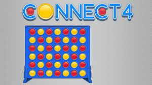

Connect 4 is a two-player connection board game, in which the players first choose a color and then take turns dropping colored discs into a seven-column, six-row vertically suspended grid.
The objective of the game is to be the first player to form a horizontal, vertical, or diagonal line of four of one's own discs. Connect 4 is a solved game, with the first player able to force a win.
Connect 4 was first sold under the Connect Four trademark by Milton Bradley in February 1974. Connect 4 is also known as Four Up, Plot Four, Find Four, Captain's Mistress, Four in a Row, Drop Four, and Gravitrips in the Soviet Union.
The game is played with the two players alternating turns dropping one colored disc at a time down one of the seven slots. Once the disc reaches the grid, it falls straight down to occupy the lowest available space within the column. The game ends when there is a 4-in-a-row or the entire grid of 42 slots is filled.
The first player to achieve four of their colored counters in a row wins.